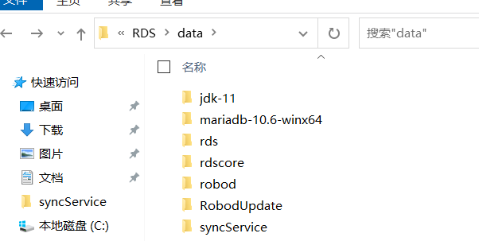

Type '/' for commands
Windows双机热备部署方式及功能简介
Windows双机热备部署方式及功能简介
Modified March 11
一、功能简介

双机热备能完成 RDS 两台服务器之间实时的数据同步，包括 RDS 数据库 、场景文件、配置文件等。同时，它可以在主服务器发生故障时实现人工或自动切换到备份服务器上继续任务，确保数据的安全性和任务的连续性，而用户使用时无需关注哪一台服务器作为主服务器，以及当前主服务器的ip地址，只需要通过配置好的公共IP访问服务即可。
对于Windows操作系统，主要通过可执行文件 SyncService.exe 来实现文件的实时同步和服务切换和公共IP的配置。
二、环境要求及安装方式
1.环境要求
2.安装方式
Windows下的双机热备目前支持自主安装的方式进行部署。
其中自主安装指的是现场人员自行在服务器中安装并激活windows server操作系统，然后在该系统中安装RDS以及双机热备的相关服务。 注：目前仅支持Base包中默认安装的Mariadb数据库。
3.安装步骤
自主安装方式如下。
•
现场人员自主安装
第一步：安装并激活操作系统。对于该种安装方式，首先需要用户自行准备版本正确的 Windows Server 操作系统并在两台服务器上完成安装和操作系统激活， Windows Server 2016，2019， 2022 等常见版本均支持 。
第二步：通过Base包安装RDS及双机热备相关服务。详见链接： windows下的RDS部署方式 ，最终安装后的目录结构如下所示，其中syncService包含了双机热备所需要的软件及相关脚本文件：

说明：通过双机热备专属的Base包完成上述安装后，会自动配置相关的环境变量和系统服务，使得双机热备服务能够开机自启，并且在按照下文配置好主备机IP地址和公共IP地址后，在之后的重启中能够让主机自动开启RDS服务。
第三步：完成后续配置工作。在完成上述步骤后，在两台服务器上均按照下文步骤完成相关的配置。
三、防火墙及文件夹权限设置
1.在文件同步过程中会由于防火墙和文件夹权限问题，使得同步文件受阻，因此需要关闭防火墙并开放同步文件夹的操作权限。点击“开始”→“控制面板”→“系统和安全”→“Windows Defender防火墙”→“启用或关闭Windows防火墙”→选择“关闭Windows防火墙”，点击“确定”即可。